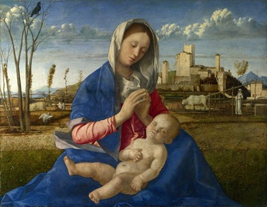

Soeur Wendy Beckett
THỜI KỲ PHỤC HƯNG Ở VENISE
Hội họa Venise trong thời kỳ Phục hưng thuộc về truyền thống Bắc Ý,
có lý lịch riêng và phố hệ riêng. Các họa sĩ Venise cũng tìm hiểu
luật phối cảnh và toán học, và điều không thể tránh là họ đã chịu
ảnh hưởng của nền nghệ thuật phong phú Florence dưới triều đại
Medicis, trái tim của Phong trào Phục hưng, nhưng dù sao người ta
cũng thấy xuất hiện ở Venise một truyền thống mới, chủ yếu là về hội
họa. Hội học Venise tỏ ra ít chú trọng tới hình thể về mặt điều khắc
và được giới hạn rõ ràng, mà tìm kiếm tác dụng của màu và ánh sáng
nhiều hơn. Ngay từ đầu, nền hội họa đó đã biểu hiện một tính chất
trữ tình đáng yêu một cách lạ lùng, khác hần với truyền thống
Florence.
Nghệ sĩ có uy tín khá lớn để dẫn đạo nền hội họa trong giai đoạn mới
này và do đó gây ảnh hưởng lớn đối với trào lưu nghệ thuật Tây
phương trong các thế kỷ sau là Giovanni Bellini (khoảng 1427-1516).
Bellini thuộc về một gia đình nghệ sĩ gồm có cha ông, Jacopo (khoảng
1400-1470/71) và em ông, Gentile (khoảng 1429-1507). Hai anh em học
vẽ với cha; bản thân Jacopo Bellini trước kia là học trò của Gentile
Fabriano; theo truyền thống Venise, bí mật và kỹ thuật được truyền
từ thế hệ này qua thế hệ khác. Anh em Bellini trở thành nhóm họa sĩ
lỗi lạc nhất Bắc Ý. Và giống như những thời kỳ đầu của phong trào
Phục hưng có quan hệ mật thiết với nền văn hóa Florence, gia đình
Bellini cũng là những người có trách nhiệm đối với di sản tiêu biểu
của Venise trong phong trào Phục hưng sơ khai ở cuối thế kỷ 15 và
đầu thế kỷ 16.
ẢNH HƯỜNG CỦA MANTEGNA
Mặc dầu Mantegna là một gương mặt biệt lập, ông cũng có những quan
hệ chặt chẽ và có lợi với gia đình Bellini (ông còn là quyến thuộc
của gia đình này khi kết hôn với Nicosia, em gái của Giovanni và
Gentile). Tác phẩm của Mantegna đã để lại dấu vết trong tác phẩm của
các anh vợ mình. Giovanni Bellini là một trong những họa sĩ vĩ đại
nhất của mọi thời đại, có khả năng thu hút tính chất uy nghiêm trần
trụi của Mantegna và biến đổi nó đi bằng sự khéo léo tinh tế của bút
pháp riêng.
Viện Bảo Tàng Quốc gia ở Anh có giữa hai bức tranh thể hiện Chúa
Christ ở vườn ô liu do hai họa sĩ vẽ. Bức tranh của Mantegna có lẽ
được vẽ khoảng 5 năm trước bức của Bellini, và Bellini luôn luôn coi
tác phẩm của mình là kém hơn. Tuy nhiên, chúng ta thấy có những nét
giống nhau. Cũng bối cảnh khô cằn, sỏi đá, phù hợp với tính cách
khắc khổ của giai thoại. Cũng phối cảnh tuyệt vời cho thấy các tông
đồ ngủ mê mệt trong tư thế rút ngắn mình. Cũng tư thế nhìn từ lưng
của Chúa Christ, một mình trên mỏm đá, chân đi đất, không phương tự
vệ, phó thác mình cho Đức Chúa Cha và cho số mạng. Trong cả hai bức,
chúng ta đều thấy những tên lính ở đàng xa được Judas dẫn đường đang
tới bắt Jésus.
Nhưng hai bức tranh khác nhau một cách tinh vi, không chỉ vì
Mantegna quan tâm nhiều hơn tới kết cấu địa vật lý của các tảng đá
mà còn vì tác phẩm của Bellini ít tính gây hấn hơn, ít tính đối đầu
hơn. Có lẽ đó chỉ là những nét tiểu dị, nhưng ấn tượng của bức tranh
được điều hòa, bức tranh trở nên dịu dàng hơn, dễ giải thích cách
khác hơn. Ở đây, ta đã gặp thiên tài của Bellini, ý thức về ánh sáng
đặc biệt của ông.
Đối với Mantegna, đó là khoảnh khắc thiêng liêng, cái "giờ phút" mà
Jésus nói tới, siêu thực, không liên quan gì tới giờ giấc của một
ngày bình thường. Bầu trời của Mantegna, cũng như thành phố buồn
thảm và đông cứng ông vẽ, là khung trời vĩnh cửu. Còn Bellini cho
chúng ta thấy một thành phố thật hiện ra trong bầu trời ban mai nhẹ
nhàng. Sức nóng của ánh sáng ban mai bắt đầu lấn bước cái mát mẻ của
ban đêm, và Chúa Thánh thần - Thiên thần an ủi - lơ lửng nhẹ nhàng,
như ẩn như hiện, sẵn sàng tan đi như một đám mây. Còn ở bức của
Mantegna thì đó là một nhóm đông thiên thần.
Khi tới độ tuổi chín chắn, Bellini diễn đạt ánh sáng với sự sùng
kính thần bí. Đối với ông, ánh sáng có một ý nghĩa thiêng liêng, ý
nghĩa mà ông có thể chia sẻ với chúng ta mà không phải giải thích.
Bellini là một nghệ sĩ đặc biệt, nhạy cảm với cái đẹp, biết tầm quan
trọng của hình thể và có lòng yêu thích cuồng nhiệt dối với cái hữu
hình cũng như cái vô hình, tình cảm đó làm cho tác phẩm của ông có
sức gây xúc động ở mọi bình diện. Không có bức tranh nào của Bellini
lại không chứa đựng niềm vui và ý thức về ý nghĩa của cuộc sống.
Bức Đức Mẹ ở Prato (hình 15) có thể tỏ ra quá nặng truyền thống, cho
dù nó làm ta rất thích. Nhưng đây là một tác phẩm có tính cách tân
một cách kín đáo. Từ khi Vasari, nhà viết sử nghệ thuật vĩ đại đầu
tiên, đồng ý với Michel Ange, khẳng định rằng hình thể quan trọng
hơn màu sắc và rằng các họa sĩ Venise đã lầm khi gán cho màu sắc tầm
quan trọng quá đáng thì các học giả tiếp tục đối lập Florence với
Venise. Trong ý nghĩa đó, Giovanni Bellini là họa sĩ "hàng đầu" của
Venise.

Giovanni Bellini, Đức Mẹ ở Prato (Madonna del Prato), năm 1505,
67,3 x 86,4 cm, London, Anh
Ông bao phủ chúng ta bằng một thứ ánh sáng thần kỳ, thứ ánh sáng sờ
thấy được, nó làm cho màu sắc chói lọi rực rỡ. Trong thế giới đầy
màu sắc đó, người đàn ông và người đàn bà không chỉ được đặt vào
thiên nhiên, mà họ là một phần của thiên nhiên, một cách biểu thị
khác của chân lý. Cấu trúc của mặt đất, những hàng rào thấp, cái
giếng có hàng cây che, tất cả phản ánh sự phong phú kín đáo, gắn
liền với hình thể khối tháp mạnh mẽ của Đức Mẹ và Chúa Hài Đồng ở
giữa bức tranh, một cách khó hiểu, không giải thích được.
Đức Mẹ là một chủ đề hội họa phổ biến ở thời Phục hưng. Gần như tất
cả họa sĩ lớn đều thử đề tài này, và chúng ta hiểu được tại sao. Chủ
đề Đức Mẹ và Chúa Hài Đồng cần tới những sự thật cơ bản của cơ đốc
giáo (trong đó có bí nhiệm về nhân tính của Chúa Christ) cũng bằng
với những giá trị nhân bản, cơ sở của mọi tôn giáo trên thế giới.
Họa sĩ nào cũng có một người mẹ. Mọi hoạt động tâm lý đều chịu ảnh
hưởng của sự kiện này. Nghệ sĩ cảm thấy một nhu cầu không thể cưỡng
nổi là phải khám phá sự thật cơ bản đó của đời sống con người. Hơn
ai hết, Bellini đã cảm thấy sự thôi thúc đó và đem hết tâm trí thể
hiện sự quan hệ mạnh mẽ nối liền đứa con với người mẹ. Mỗi bức tranh
Đức Mẹ của ông có một sức mạnh thẩm mỹ và tinh thần làm ta không sao
quên nó nỗi (ông vẽ độ mười bốn bức như vậy). Ông hiểu ý nghĩa
nguyên thủy của quan hệ mẫu tử, cơ sở của lòng tin mà chúng ta phát
hiện dưới hình tượng đức mẹ của ông. Đó chỉ là thí dụ, nhưng có ý
nghĩa. Ông đã thành công khi lặp lại cái đã trở thành một công thức,
gần như một thánh tượng, bằng sự mô tả có sức thuyết phục tuyệt vời
cái thiêng liêng và cái nhân bản.
ĐIỀM CHẾT CHÓC
Một con quạ lớn với vẻ tang tóc nhìn cánh đồng: sự nhắc nhở về cái
chết luôn luôn có mật. Tuy vậy, cái chết có tầm vóc hạn chế so với
sự to lớn trong sáng của khối hình Đức Mẹ và Chúa Hài Đồng, điều đó
khẳng định sự sống sau cái chết là có thật. Con quạ đậu trên cành
cây trơ trụi, in hình lên bầu trời xanh trong.
Mặc dầu vai trò của nó có tính tượng trưng, con quạ cũng thuộc trật
tự tự nhiên của sự sống.
SỰ TRANH ĐẤU ĐỂ SỐNG CÒN
Ở một khoảng kế bên cái chết, một con cò trắng gặp một con rắn.
Giương cánh ra với vẻ dọa nạt, con cò bao vây con rắn. Cuộc chiến
đấu tượng trưng sự tranh đấu giữa cái Thiện và cái Ác. Có lẽ điều
này cũng dựa vào sự tranh đấu của Chúa trước sự Hy sinh, và vào lý
do của sự hy sinh đó: việc con rắn xâm nhập vườn Địa đàng.
PHONG CẢNH VENISE
Ở bên phải, ngăn cách với cái chết, chúng ta thấy diễn tiến của sự
sống. Bất chấp sự có mặt của cái chết, cuộc sống hàng ngày vẫn tiếp
diễn. Một con bò trắng chậm rãi kéo cày, người nông dân theo sau.
Phía trên họ, một làn mây mơ hồ từ đằng sau những dải lũy sáng chói
của khu phố nhỏ mà những lo toan vật chất được ngăn cách rất đúng
với chủ đề lớn lao về sự sống và cái chết. Đức Mẹ không ở trong một
khu vườn kin, xung quanh có các tiểu thiên thần và thiên thần bay
giữa rừng hoa, nè ở trong một thế giới rất thực - thế giới của
Bellini, trong tinh Venise.
NGƯỜI MẸ VÀ ĐỨA CON
Những sắc độ lam và đỏ sét ở chiếc do choàng của Đức Mẹ nhắc lại,
với độ đậm hơn, những màu của thế giới vật chất xung quanh: đất và
trời. Bà ngồi ngay trên mặt đất, không như một bà hoàng ngồi trên
ngai một cách uy nghi (ta hãy nghĩ tới bức Maesta của Duccio), mà
như Đức Mẹ nhẫn nhục, truyền thống của thế kỷ 14. Áo của bà làm
thành một hình tháp đồ sộ, nhưng sự nhẫn nhục của bà có vẻ thật, chứ
không phải như một ước lệ hội họa đơn giản. Đây là sự vĩ đại của
Bellini: hợp nhất cái tượng trưng và cái thực bằng chính nguồn ánh
sáng tự nhiên.
Ta cũng thấy lại sự hài hòa như vậy trong bức Thánh Jérôme mà trung
tâm chú trọng không phải là vị thánh, càng không phải là con sư tử
được thuần hóa gầm gừ sau lưng ông mà là con thỏ trắng tuyệt đẹp
đang gặm cỏ với vẻ cũng dừng dưng như vị thánh đang đọc sách là món
ăn tinh thần của ông. Tất cả tâm trí của nhà thông thái bị thu hút
vào quyển sách, những con thỏ nhỏ bé sáng rực trong ánh sáng mùa
đông và làm chúng ta nhận biết cái đẹp của tạo vật với núi non, cây
cối, dầm nước và đá sỏi của nó.
Một bức tranh tuyệt đẹp khác của Bellini, bức Yến tiệc của thần
linh, được Titien sửa đổi và làm cho nó rực rỡ hơn. Về thực chất,
bức tranh thuộc về Bellini: tất cả các vị thần được nhân cách hóa và
mô tả bằng một nét nào đó trong truyền thuyết về họ, và hoạt cảnh
thấm đẫm một thứ ánh sáng óng ánh. Một nét khác nữa cho thấy tầm vóc
đặc biệt của Bellini. trong khi ông đã mở đường cho Giorgione và
Titien (là người đánh dấu bước khởi đầu của một thời kỳ hội họa
mới), thì người nghệ sĩ già nhường bước cho ảnh hưởng của các nghệ
sĩ trẻ và thực hiện những tuyệt tác vào cái tuổi trên 80 bằng cách
cải biến chính bút pháp của mình.
TRANH SƠN DẦU VÀ ẢNH HƯỞNG CỦA TRƯỜNG PHÁI FLANDRE Ở VENISE
Nếu sau cùng Bellini thoát ra khỏi ảnh hưởng của Mantegna để chọn
một bút pháp riêng thì nhiều nghệ sĩ khác, có lẽ là những tài năng
kém nhất, đã đi theo những con đường của ông để đạt tới đỉnh tài
năng của họ, và ở yên đó.
Họa sĩ người Sicile Antonello da Messina (khoảng 1430-1479) là một
nhân vật khá phức tạp, một phần lớn là Vasari đã nhầm lẫn khi gán
cho ông là người phổ biến ở nước Ý kỹ thuật sơn dầu được Van Eyck sử
dụng. Antonello là họa sĩ lớn đầu tiên của miền Nam Ý, nhưng ông
không thuộc về một trường phái nào ở miền Nam; ông đã gặp những danh
sư ở nơi khác, trong nghệ thuật xứ Flandre.
Do ảnh hưởng của trường phái Flandre rất rõ trong tranh của ông,
Antonello là một thứ cầu nối giữa Ý và Hà Lan. Cuộc viếng thăm
Venise năm 1475 của ông nhất định là có một vai trò quan trọng trong
lịch sử hội họa Venise. Ông đã gặp Bellini.
Một số nhà phê bình nghĩ rằng Antonello đã đưa kỹ thuật sơn dầu vào
Venise, lúc đó kỹ thuật này đã được các họa sĩ Flandre sử dụng thành
thạo. Một số khác cho rằng ông đã biết rõ chất pha màu vì đã làm
việc ở Naples với một họa sĩ đã chịu ảnh hưởng với các họa sĩ
Flandre, và sự hiểu biết đó đã có ảnh hưởng đáng kể với những họa sĩ
dã thực hành tranh sơn dầu. Dù thế nào đi nữa, nhờ sự gặp gỡ của các
truyền thống đó mà kỹ thuật sơn dầu đã được thử nghiệm ở Ý, đầu tiên
bởi các họa sĩ Venise, trước khi lan tới các trung tâm nghệ thuật
khác. Về phần Antonello, ông không cần một danh giá giả trá lắm. Ông
đã học được sự quan trọng của cái chính xác từ Piero della Francesca
và nhất là Mantegna. Các hình thể của ông gần như được xác định giới
hạn quá kỹ, quá rõ, với sự chăm sóc về chi tiết quá đáng, đặc trưng
cho trường phái Flandre trái ngược với sự rộng rãi rất đặc trưng của
Ý về mặt hình thể, và tác phẩm của ông đấm trong một thứ ánh sáng
lãng mạn.
Bức Chân dung đàn ông của ông dù với vẻ mặt tròn và không cá tính
nhưng có thứ ánh sáng nội tâm và là một tác phẩm lớn, cũng như bức
Đức Mẹ truyền tin mang một vẻ giản dị cảm động làm cho bức tranh có
một ấn tượng rất lớn. Điều đáng ghi nhận là ông thích thể hiện Đức
Mẹ Đồng trinh, đối tượng sùng bái, hơn là bản thân sự kiện Truyền
tin.
SỰ SAY MÊ DÁNG VẺ BỀ NGOÀI
Carlo Crivelli (1480/35-khoảng 1495) cũng thuộc một gia đình nghệ sĩ
ở Venise. Như Antonello da Messina, ông có một bút pháp chính xác
rất dễ nhận ra, chịu ảnh hưởng của Mantegna, nhưng họa thuật của ông
có một vẻ kiểu cách.
Nghệ thuật của Crivelli - một phần có lẽ do ảnh hưởng trường phái
Flandre qua Antonello - cho thấy sự quan tâm sâu sắc tới dáng vẻ bề
ngoài của vật, mà ông thể hiện rất hoàn hảo, nhưng không bao giờ chú
ý tới sự thật tinh thần bao hàm trong đó (đây là điều đáng ngạc
nhiên vì ông chỉ vẽ những đề tài tôn giáo).
Crivelli xuất sắc hơn trong sự thể hiện vật chất, say mê vì đường
cong mềm mại của một trái lê hay những nếp có góc cạnh của chiếc áo,
và khiến chúng ta chia sẻ được tính thích những vật lộng lẫy của
ông. Khi ông tìm cách ám chỉ cảm xúc thì ông tỏ ra lúng túng, nhưng
trong lĩnh vực của mình thì ông rất xuất sắc. Bức Đức Mẹ của ông
trông thanh nhã và ý tứ đến nỗi chúng ta quên mất người cung kiến
nhỏ xíu đang quỳ (hãy để ý các tay ngai hình rồng, biểu tượng của
sức mạnh thô bạo tuân phục tôn giáo). Đối với họa sì, nhân vật này
chỉ là thứ yếu, vì tính chất thần thánh và người đang cầu nguyện
được ông quan tâm ít hơn các hình thể và sự tương quan của chúng mà
ông biết cách lợi dụng xuất sắc.
Giovanni Battista Cima tức Cima da Conegliano (khoảng 1459-1517/18)
sống cả đời quanh vùng Venise, trong thành phố nhỏ Conegliano. Ông
chịu ảnh hưởng nhất của Mantegna, nhưng cũng chịu ảnh hưởng của
Giovanni Bellini lúc mới bắt đầu vẽ. Ông không phải là một họa sĩ
lớn, và tiến bộ rất ít, nhưng ông có một vẻ ngày thơ tự nhiên, một
cảm giác về bối cảnh và sự đầy đủ về kỹ thuật khiến tác phẩm của ông
có một vẻ dễ thương. Bức Thánh Hélène là một thí dụ đẹp trong sáng
tác của ông. Cao lớn, đường bệ, mang một thánh giá song song với một
thân cây đứng thẳng, hình ảnh của bà sừng sững trên các ngọn đồi
xanh, xung quanh là các thành thị nhỏ, nơi bà tìm ra thánh giá, và
làm biến đổi cuộc sống của cư dân. Tầm vóc của bà, cũng như dáng
điệu doan trang, nghiêm nghị, là một phần ý nghĩa của bức tranh.
TRƯỜNG PHÁI FERRARE
Cosimo Tura (khoảng 1430-1495) và Francesco del Cossa (khoảng 1435-
1477), họa sĩ của thành bang độc lập Ferrare, là người đồng thời và
ngưỡng mộ Mantegna. (Trong thời Phục hưng, Ferrare là một trung tâm
nghệ thuật náo nhiệt, và triều đình của dòng họ Este khích lệ nghệ
sĩ của toàn nước Ý.) Tura có lẽ là người tài năng hơn. Nghệ thuật
độc đáo của ông dễ nhận ra, vì nó kết hợp nét thanh lịch tinh tế và
sự phóng túng. Họa pháp của ông có nét rất sắc bén. Trong bức Đức Mẹ
và Chúa Hài Đồng, có nét tinh thần và âu yếm, hình thể tuyệt mỹ và
sự đối chọi màu sắc táo bạo. Đức Mẹ chụm những ngón tay dài thanh tú
như che chở Chúa Hài Đồng trong giấc ngủ, đầu của các tiểu thiên
thần như một lớp gối tựa sau lưng bà. Chúng ta ý thức được rằng hai
loài sinh vật mong manh của Chúa Trời cần được bảo vệ, vì những ánh
sáng mờ xuyên qua đêm tối ở hậu cảnh được cụ thể hóa thành những tia
sáng dọng trên lá và trái cây, gây lo ngại một cách kín đáo.
Francesco del Cossa đã nhân tính hóa sự khắc khổ vô tư. Mặc dầu ở
Ferre nhưng bức tranh Thánh Lucie của Cossa thuộc truyền thống
Florence, chịu ảnh hưởng nét sắc sảo của Mantegna và màu sắc kim
loại đặc trưng của Tura. Tuy nhiên, trong đó cũng có ấn tượng dịu
dàng hơn, có lẽ do tính sáng của chất pha màu được dùng là sơn dầu.
Thánh Lucia của Cossa cao lớn, sáng chói trong không gian rực rỡ ánh
vàng, đến nỗi chúng ta không nhận ra ngay được những đóa hoa bà cầm
thật ra là đôi mắt trên một nhánh cây nhỏ. Truyền thuyết đã nói một
cách sai lầm là bà bị móc mắt khi tuẫn đạo nên biểu tượng bi thảm đó
luôn luôn có trong các bức chân dung của bà. Thật ra, biểu tượng đó
là do tên của bà, Lucie có nghĩa là ánh sáng.
Người cuối cùng trong số những họa sĩ lớn của Ferrare là Ercole de'
Roberti (khoảng 1450-1496). Ông chịu ảnh hưởng của phong cách cổ
điển và điều độ của Mantegna, và của Cossa. Đúng là bức tranh Vợ của
Hasdrubal là một chủ đề không quen thuộc, nhưng nó làm chúng ta xúc
động ngay từ cái nhìn đầu tiên vì vẻ mặt của ba nhân vật điên cuồng
vì xúc động mà đông cứng như bức tượng bất động.
CARPACCIO: NGƯỜI KỂ CHUYỆN
Vittore Carpaccio (1455/65-1525/26), mặc dầu chủ yếu thuộc trường
phái Venise, nhưng rõ ràng chịu ảnh hưởng của các họa sĩ lớn thuộc
trường phái Ferrare, cũng như của Gentile Bellini. Có lẽ ông là học
trò của Jacopo Bellini và phụ tá cho Giovanni.
Ông có cái tài năng bẩm sinh và sự độc đáo của người kể chuyện. Sự
quan tâm tới chi tiết của ông có cái vẻ ngây thơ của thời trung cổ,
mặc dầu bút pháp của ông thật ra được nghiên cứu rất kỹ vì đôi khi
ông cố ý đơn giản để kể chuyện hay hơn; đối với ông, mục đích biện
minh cho phương tiện.
Carpaccio có thể vươn lên khỏi cái ngoạn mục. Những nhân vật trong
bức Chạy trốn vào Ai Cập khá phóng túng: Marie ăn vận lộng lẫy, và
chất lụa áo bà rõ ràng cũng được dùng may áo choàng cho Joseph.
Những khung cảnh huy hoàng đã làm chúng ta quên những chi tiết đó.
Cảnh mặt trời lặn, rất thực, cho thấy tài năng của Carpaccio. Ánh
sáng nhuộm một ngôi làng và vùng lân cận không tạo dược cảnh "đẹp
như tranh" mà vẫn hoàn toàn thuyết phục.
Hệ truyền thuyết của Carpaccio dứt khoát có nét gothic, như trong
bức Giấc mộng của thánh Ursule. Nàng công chúa huyền thoại của nước
Anh dẫn 1100 trinh nữ, mà nàng đã cải thành tín đồ cơ đốc, đi hành
hương Roma. Trên đường về, các trinh nữ bị quân Hung nô tàn sát.
Chiếc giường nhỏ và vị nữ thánh đang ngủ có cái vẻ dễ thương của món
đồ tráng men xinh xắn, nhưng khung cảnh yên tĩnh dã bị khuấy động vì
sự xuất hiện của thiên thần cầm một nhành cọ tượng trưng sự tuẫn
giáo.
Sự mô tả tỉ mỉ của Carpaccio về thế giới của thế kỷ 15 đã giúp các
sử gia hiểu sâu đời sống thật của Venise thời kỳ đó. Sự thể hiện
thực tế trung thực đó bao gồm nhiều vật nhỏ mọn mà người ta thấy lại
trong tác phẩm của một họa sĩ Venise ở thế kỷ 18 là Canaletto.